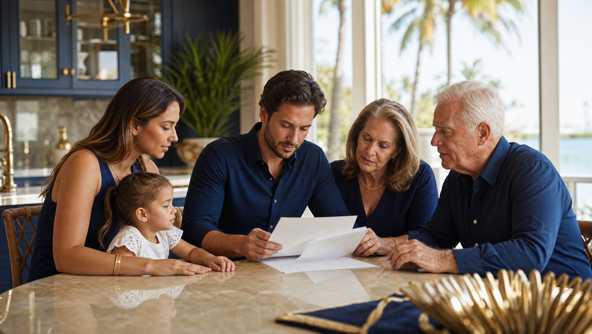

Living Trusts Ruskin: The Short Answer
If you searched "living trusts Ruskin," here's the direct answer: there is no special "Ruskin trust" or Hillsborough County version of a trust. Ruskin residents use the same Florida revocable living trust that's available to anyone in the state, created and governed by Florida's trust statutes. What's changed is that Ruskin itself — once a small agricultural community south of Tampa — has grown substantially, and with that growth has come more homeowners, more retirees, and more families who own real estate, farmland, boats, or small businesses that make a living trust worth a serious look.
In my practice, I explain a living trust as a container you create and control during your lifetime. You sign the trust document, you typically serve as your own trustee, and you move ownership of your home, bank accounts, or other property into the trust's name. When you pass away, a successor trustee you've named steps in and distributes those assets directly to your beneficiaries — usually without a Florida probate case at all.
Have this exact situation? Talk it through with a Florida attorney — the 20-minute consultation is free.
Book Free Consult or call (888) 388-8445How a Florida Living Trust Is Created
Florida living trusts are governed by the Florida Trust Code, found in Chapters 736 through 739 of the Florida Statutes. To create one, you need a written trust instrument that identifies:
- The grantor — the person creating the trust and contributing assets to it
- The trustee — usually the grantor, while they're alive and able to manage things
- The successor trustee — who takes over if you become incapacitated or pass away
- The beneficiaries — who receive trust assets, and when
A revocable trust document itself doesn't legally require witnesses or notarization to be valid under Florida Statutes § 736.0403. That said, in my practice I still recommend executing it with the same formalities used for a Florida will — two witnesses and a notary — because many trusts include provisions for what happens at death, and because a properly witnessed and notarized document is far less likely to be questioned later by a bank, title company, or family member.
Why Ruskin and South Hillsborough County Families Use Them
Ruskin's growth — from a small farming town founded in the early 1900s to a suburb with a population approaching 30,000 — has brought a wider mix of assets into local estates: single-family homes, agricultural land, mobile homes on owned lots, boats and RVs, and small family businesses. A living trust is particularly useful when:
- You own Florida real estate and want to avoid a probate proceeding for your home or land
- You own property in more than one state (common with retirees and part-time Florida residents) and want to avoid multiple probate cases
- You want a plan for incapacity — so a successor trustee can manage your finances without a court-supervised guardianship
- You want your family's affairs to stay private, since a funded trust generally isn't filed with the court the way a probated will is
It's worth noting that Florida's homestead protections under Article X, Section 4 of the Florida Constitution, and the homestead devise rules in F.S. § 732.4015, interact with trust planning in specific ways — particularly if you're married or have minor children. This is one of the most common areas where I see well-meaning DIY trusts create unintended problems, so homestead property deserves a careful look before it's transferred into any trust.
Recent Changes to Florida Trust Law
Florida's trust laws have shifted in ways worth knowing about if you're setting up or updating a trust now:
- Trust duration was extended — Florida law now allows trusts to last far longer than the old limit, making Florida notably more flexible than most states for multi-generational planning.
- The Community Property Trust Act gives married couples the option to hold certain shared assets in a community property trust, which can offer tax advantages on appreciated assets — this is a newer option and worth discussing with an attorney if it might apply to your situation.
- Trustee modification powers were expanded in 2025, giving authorized trustees more flexibility to adjust certain trust terms, extend durations, or move assets to a new trust under defined circumstances — a tool that can help older trusts adapt to changed family or tax circumstances without a full court proceeding.
These developments don't mean you need to rush out and change an existing trust, but they're good reasons to have an older Ruskin-area trust reviewed periodically rather than assuming it's frozen in place.
Do You Need a Living Trust, or Is a Will Enough?
Not every Ruskin family needs a living trust. If your estate is modest, your assets are already set up with beneficiary designations (like payable-on-death bank accounts or retirement accounts with named beneficiaries), and you're comfortable with a standard Florida probate process, a well-drafted will under F.S. Chapter 732 may be sufficient.
A living trust tends to make more sense when you own real property, want to avoid probate delays and costs, want privacy, or want a built-in plan for incapacity. Most people don't need to worry about federal estate tax in this planning decision — the federal estate tax only applies to estates well above what the vast majority of Florida families own, and Florida itself has no separate state estate tax.
Frequently Asked Questions
The Truestead Takeaway
A living trust can be one of the most useful tools available to Ruskin-area families with a home, land, or accounts they'd like to pass on without a probate case — but it only works if it's properly drafted, properly signed, and properly funded, and it needs to fit alongside your will, power of attorney, and healthcare documents. If you're weighing whether a trust makes sense for your situation, or you have an older trust that hasn't been reviewed in a few years, the sensible next step is a conversation with a Florida estate planning attorney who can look at your actual assets and family circumstances rather than a one-size-fits-all template.
Have a child turning 18? Get the free 18 & Protected packet — the legal documents every Florida 18-year-old needs.
Get the Free PacketStart Your Florida Estate Plan
Build a complete, Florida-valid plan — revocable trust, will, powers of attorney, and health care documents — guided every step of the way.
Start Your Florida Estate Plan →This article is for general informational purposes only and does not constitute legal advice, nor does reading it create an attorney-client relationship. Florida estate, elder, probate, and real estate law are fact-specific and change over time. Consult a licensed Florida attorney about your individual circumstances. Arthur Simpson, Esq. is licensed to practice law in the State of Florida. Attorney advertising.
Talk to a Florida Attorney — Free 20-Minute Consultation
Pick a time below. No obligation, no pressure — just answers.